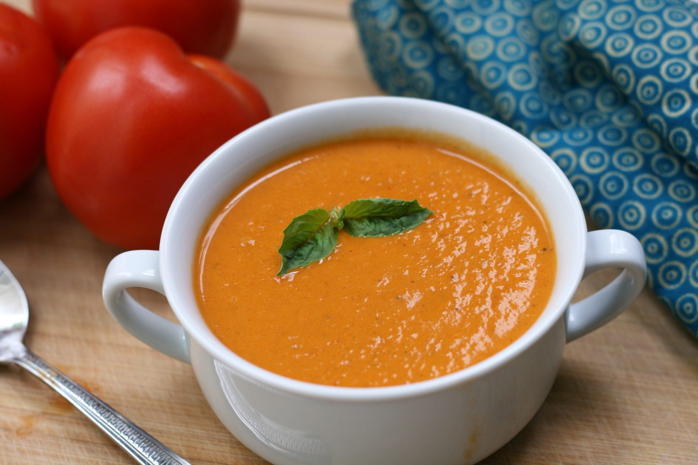

Kentucky Tomato Soup

Description
This creamy tomato soup is delicious and has a twist - the addition of strong, black coffee. This is the perfect summer dish for using freshly picked tomatoes from the garden. Remember - the better the quality of the tomatoes, the better the taste of the soup.
Ingredients
- 3 tablespoons butter
- 1 cup chopped onion
- ½ cup chopped carrots
- 2 stalks celery, chopped
- 2 cloves garlic, minced
- ¼ cup chopped fresh flat-leaf parsley
- 2 ½ cups chopped fresh tomatoes
- 1 (8 ounce) can tomato sauce
- ¾ cup strong brewed coffee
- ¼ cup water
- 1 teaspoon white sugar
- 1 teaspoon salt
- ground black pepper to taste
- ⅓ cup heavy cream